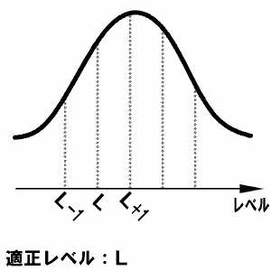

敵を倒すとクラスのレベルが少しずつ上がりますが、その時に注意しなければならないことがあります。それは、クラスレベルの上昇値はレベルの高い方のクラスに依存するということです。
高い方のクラスのランクをR、レベルをL とすると、{ ( R - 1 ) * 100 + L } / 10 のレベルが敵の適正値です。なおこれはソロでレベル上げを行う場合の適正値であり、パーティーを組んだ場合はさらに高いレベルの敵を倒す必要があります。パーティーを組んだ場合の適正値は、「パーティーでの行動：経験値とお金」を見てください。
具体的に書きますと、ファイターII(レベル10) とレンジャーI(レベル1) を育てているプレイヤーの場合、ファイターＩＩ の方に上昇値が依存します。
このときレベル1,2の敵をいくら倒してもレンジャーＩ のレベルはほとんど上昇せず、ファイターＩＩ の相手にふさわしいレベル10程度の敵を倒さなければ上がりません。
そのためスキルを変更するときは、思い切って両方同時に変更した方が効率的にレベルを上げられます。
例)
ファイターI(レベル10)、ガードI(レベル5)の場合・・・レベル10、11の敵
ファイターII(レベル90)、ガードI(レベル100)の場合・・・レベル19、20の敵
ファイターI(レベル10)、ガードI(レベル30)の場合・・・レベル3、4の敵

敵を倒したときのクラスレベル、基礎パラメーター上昇のイメージ。(L+2) 以降はどうなるか不明ですが、(L+2) 以上の敵と戦うのは無謀すぎるので、その調査自体をやめた方がいいです。
またランク3以降は(L+1) の敵を倒すのも難しいので、質より量を取り適正レベル(L) の敵を倒し続けた方が効率が良くなります。 |
|